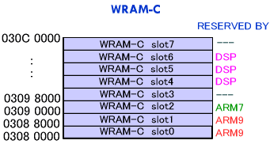

#include <twl/mi.h>u32 MI_AllocWram( MIWramPos wram, MIWramSize size, MIWramProc proc )u32 MI_AllocWramSlot( MIWramPos wram, int slot, MIWramSize size, MIWramProc proc )(define)
#define MI_AllocWram_A( size, proc );
#define MI_AllocWram_B( size, proc );
#define MI_AllocWram_C( size, proc );
#define MI_AllocWramSlot_A( slot, size, proc );
#define MI_AllocWramSlot_B( slot,.size, proc );
#define MI_AllocWramSlot_C( slot, size, proc );
| wram | WRAM to allocate. |
| slot | Slot number. |
| size | Size of the region to allocate. |
| proc | Processor to use. |
Returns the starting address if the allocation was successful.
Returns MI_WRAM_ALLOC_FAIL (defined as 0) if allocation failed.
Allocates a region from WRAM.
wram is of type MIWramPos and specifies the target WRAM. It should be MI_WRAM_A, MI_WRAM_B, or MI_WRAM_C.
size is the size of the region to be allocated. It is of type MIWramSize and should be of the form MI_WRAM_SIZE_xxxKB. The "xxx" portion should hold a value between 0 and 256. WRAM-A can be allocated in 64-KB chunks; WRAM-B and WRAM-C can be allocated in 32-KB chunks.
proc indicates which processor will use the region to be allocated. This is of type MIWramProc and is MI_WRAM_ARM9, MI_WRAM_ARM7, or MI_WRAM_DSP.
MI_AllocWram_A is the #define directive of MI_AllocWram( MI_WRAM_A, ... ). MI_AllocWram_B is the #define directive of MI_AllocWram( MI_WRAM_B, ... ). MI_AllocWram_C is the #define directive of MI_AllocWram( MI_WRAM_C, ... ). MI_AllocWramSlot_A is the #define directive of MI_AllocWramSlot( MI_WRAM_A, ... ). MI_AllocWramSlot_B is the #define directive of MI_AllocWramSlot( MI_WRAM_B, ... ). MI_AllocWramSlot_C is the #define directive of MI_AllocWramSlot( MI_WRAM_C, ... ).
Memory allocated by the MI_AllocWram* functions must satisfy the following conditions and must be allocated beginning from the low-order address side.
- They are not in use at the time.
- They are either reserved by the specified processor or are not reserved by any of the processors.
- A contiguous region of the specified size can be allocated.
With the MI_AllocWramSlot* functions, the location to be allocated can be specified. However, if the region does not fulfill the allocation conditions, this will fail, even if there are other locations that can be allocated.
(Example) Assume that WRAM-C is reserved as shown below. However, let's assume that no regions have been allocated yet.

If nothing has been allocated yet,
MI_AllocWram_C( MI_WRAM_SIZE_64KB, MI_WRAM_ARM7 )
will allocate slots 2 and 3. The return value will be 0x03950000.
If nothing has been allocated yet,
MI_AllocWram_C( MI_WRAM_SIZE_64KB, MI_WRAM_DSP )
will allocate slots 3 and 4. The return value will be 0x03958000.
If nothing has been allocated yet, allocation will fail with the following:
MI_AllocWram_C( MI_WRAM_SIZE_96KB, MI_WRAM_ARM7 )
The return value will be MI_WRAM_ALLOC_FAIL (=0).
Overview: Work RAM
MI-Related Constants
2007/08/22 Initial version.
CONFIDENTIAL